This version is no longer just a tiny supervised fine-tune. It now follows the original paper logic more closely: keep the architecture fixed, expand the data with pseudo labels, and train a student on more images than the labeled seed set.
The original paper’s headline is not a radically new architecture. It is a strong depth model plus much more training data, including pseudo-labeled data from a teacher-student pipeline.
The original recipe is huge. This project uses a local fraction of that idea: small labeled seed set, larger pseudo-labeled indoor pool, same core model family.
LiheYoung/depth-anything-small-hfThis is the closest local version of the original paper story: the student trains on materially more data than the initial labeled set.
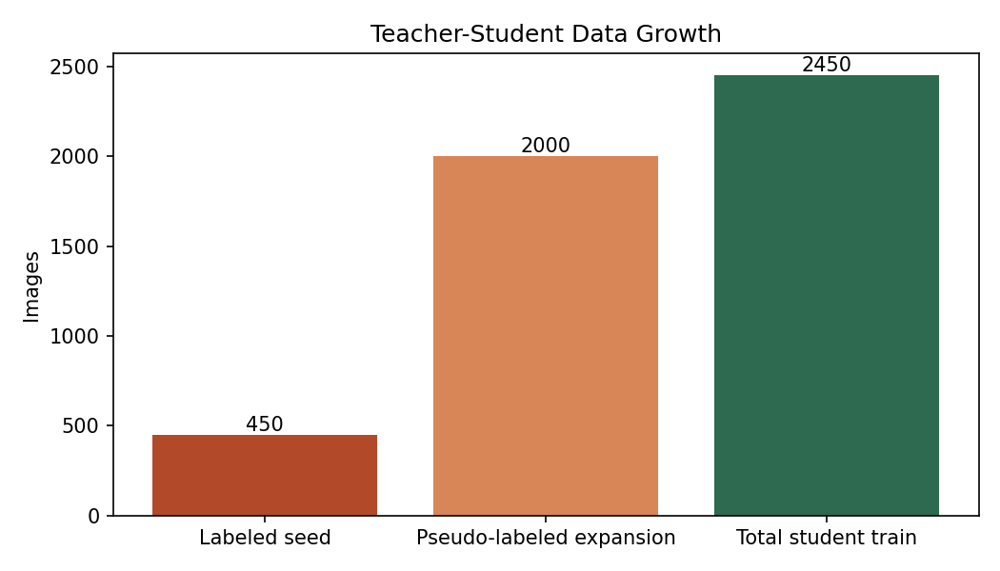
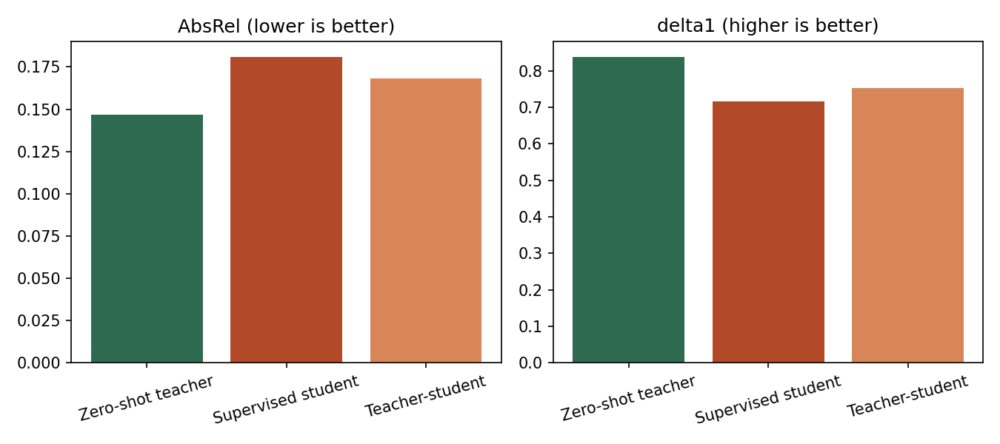
The pseudo-label expansion was not abstract. The teacher actually produced depth maps for `2000` unlabeled indoor images, and those predictions became extra student training targets.
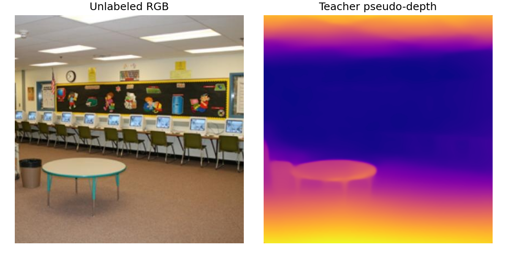
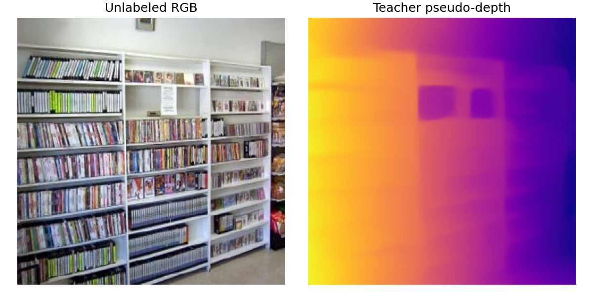
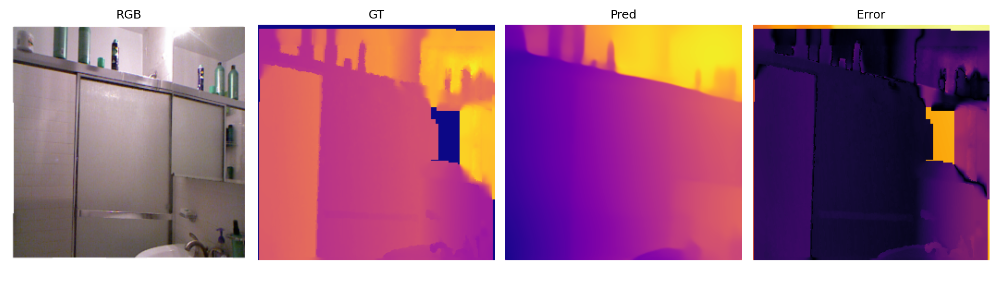
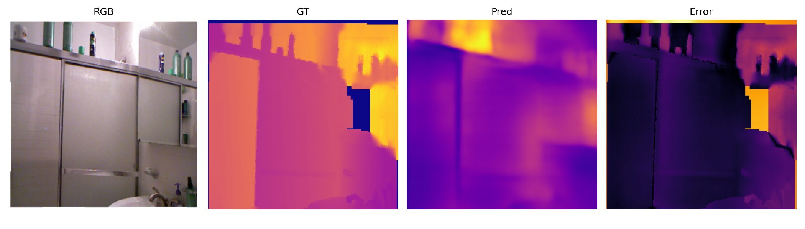
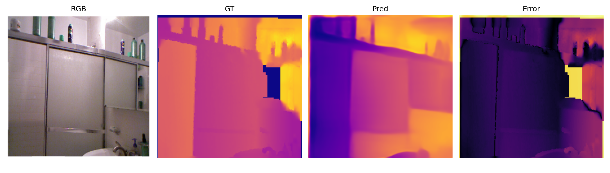
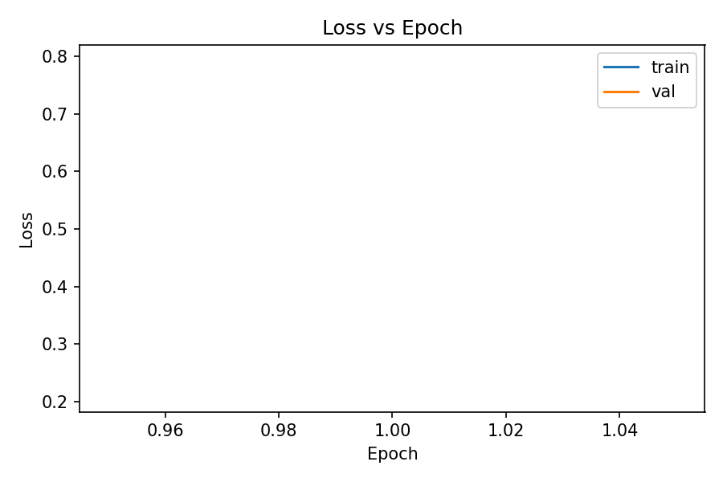
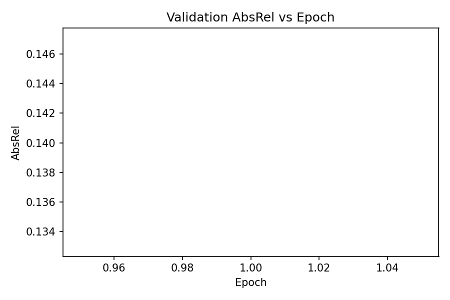
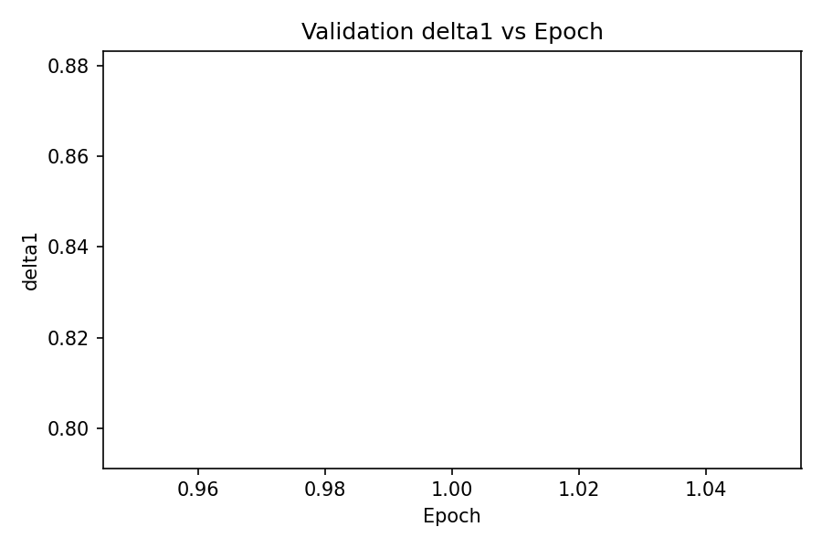
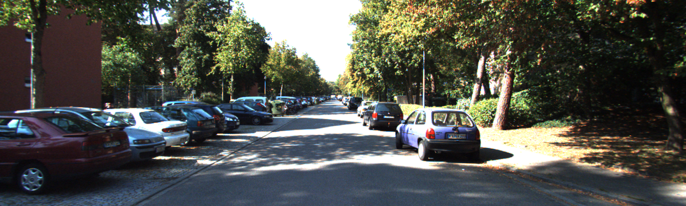
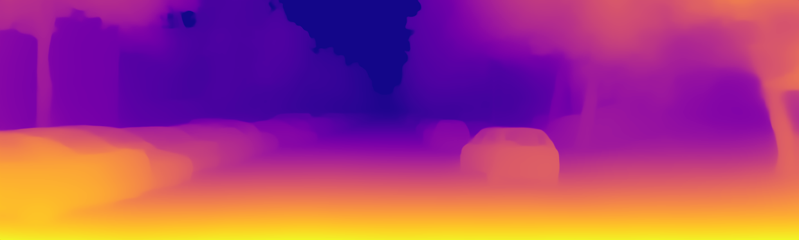
The final honest claim is not that the local student beat the teacher. It is that the repo now demonstrates the teacher-student pseudo-label expansion idea, and that the added data measurably improved the student over the tiny supervised-only baseline.